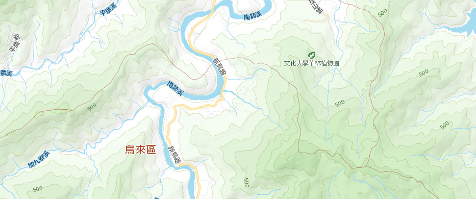

-
警示燈號
 無異常
無異常- 注意值
- 警戒值
- 行動值
- 無回應
無異常: 累積傾斜未達413秒
注意值: 5-10秒/日(24小時) 或 累積傾斜達413秒(含)
警戒值: 10-40秒/日 或 累積傾斜達572秒(含)
行動值: 40-50秒/日 或 累積傾斜825秒(含)
無回應: 超過30分鐘無資料
注意值: 5-10秒/日(24小時) 或 累積傾斜達413秒(含)
警戒值: 10-40秒/日 或 累積傾斜達572秒(含)
行動值: 40-50秒/日 或 累積傾斜825秒(含)
無回應: 超過30分鐘無資料
無異常
無異常: 累積傾斜未達413秒
注意值: 5-10秒/日(24小時) 或 累積傾斜達413秒(含)
警戒值: 10-40秒/日 或 累積傾斜達572秒(含)
行動值: 40-50秒/日 或 累積傾斜825秒(含)
無回應: 超過30分鐘無資料
注意值: 5-10秒/日(24小時) 或 累積傾斜達413秒(含)
警戒值: 10-40秒/日 或 累積傾斜達572秒(含)
行動值: 40-50秒/日 或 累積傾斜825秒(含)
無回應: 超過30分鐘無資料
台九甲10.2K(計畫範圍)
| 項次 | 監測站名稱 | A向傾斜角度(秒) | B向傾斜角度(秒) | 合向量(秒) | 累積傾斜(秒) | 警示燈號 | 資料來源 | 資料更新時間 |
|---|---|---|---|---|---|---|---|---|
| 1 | TI1 | -26.95 | 11.13 | 29.16 | --- | 臺北水源特定區管理局 | 2021-04-28 17:30:00 |
傾斜儀趨勢
監測站名稱